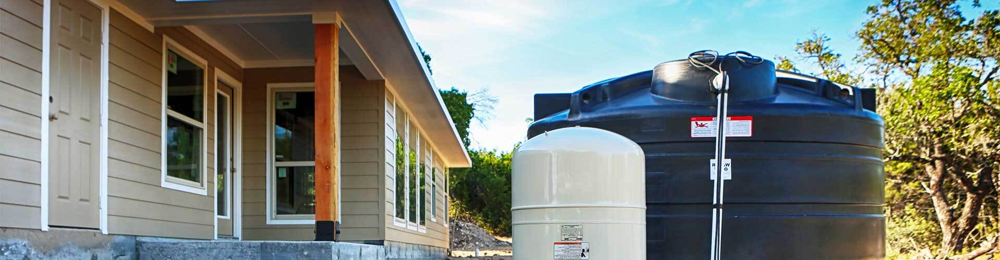
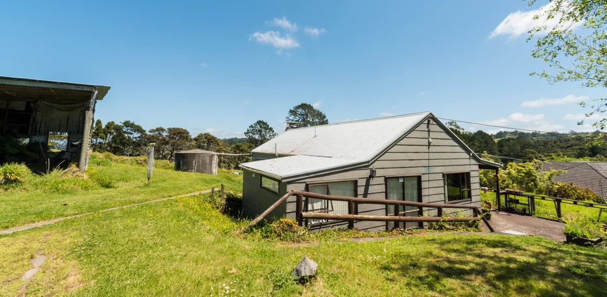
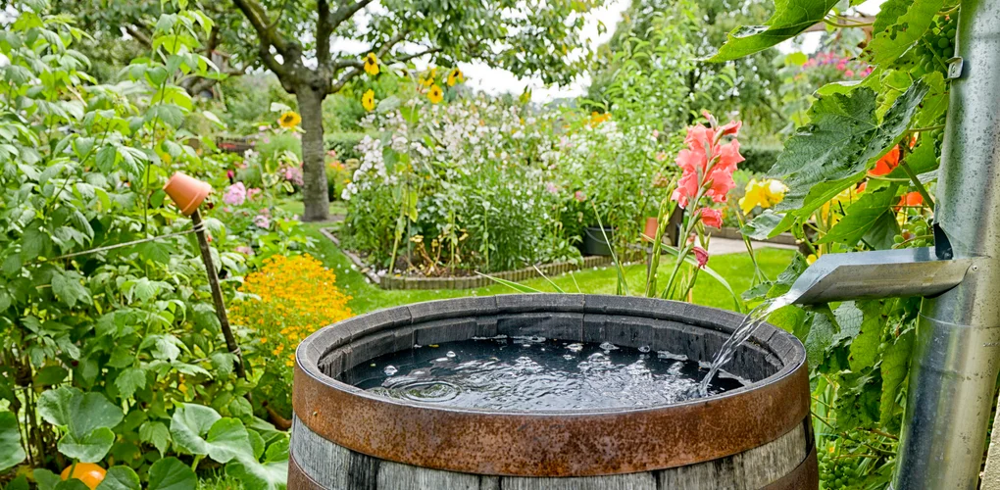
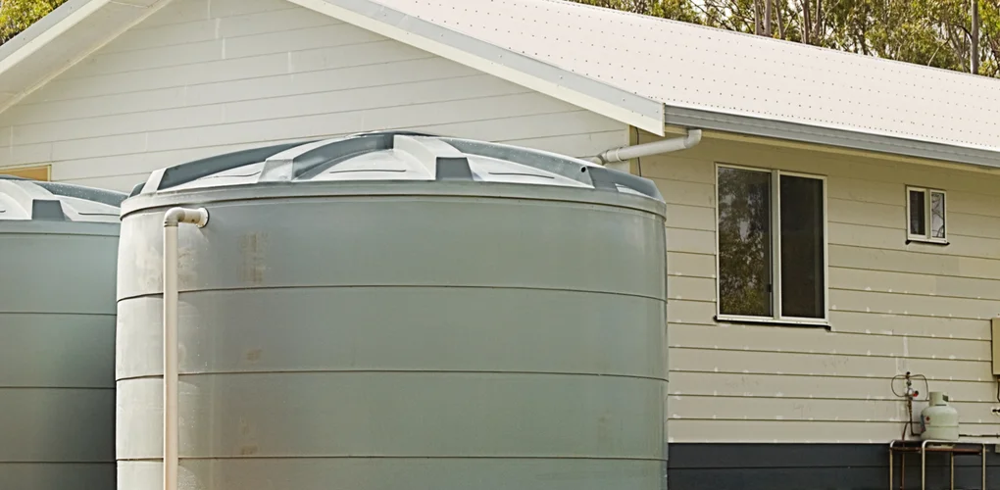
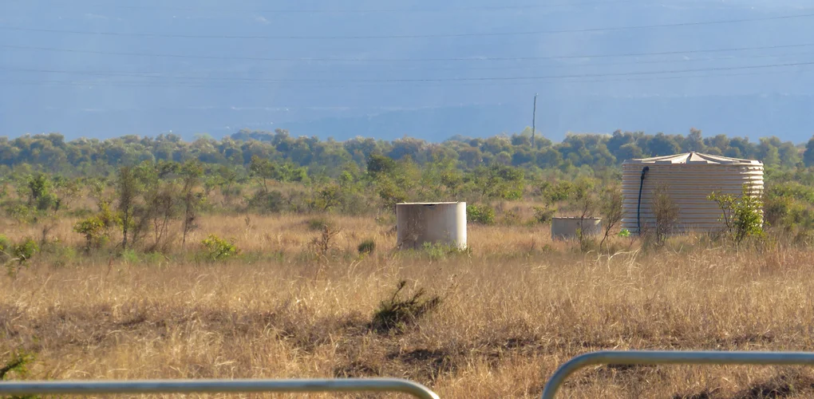
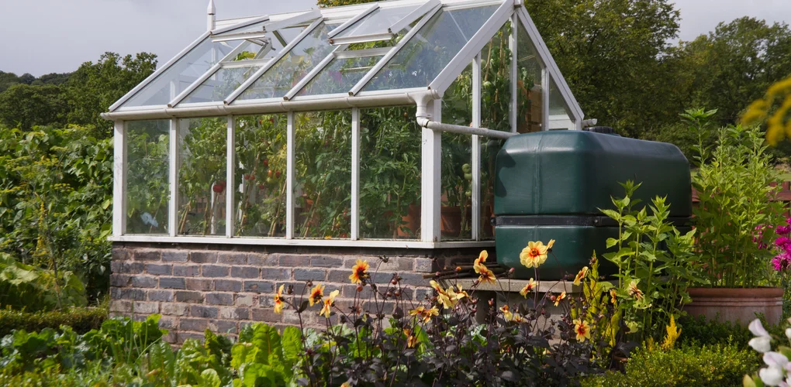

Rainwater collection offers numerous environmental and financial benefits:
- Reducing dependence on mains water
By using a rain harvesting system to supply water for some or all of your requirements, you can reduce your dependence on mains water. In turn, this will reduce your water bills and save you money. It will also ensure you’re less affected by any water restrictions that are put in place due to drought or the need to protect community water supplies from overuse. Necessity - Necessity
Mains water is not available in many rural or low population density areas. In these areas, the most obvious benefit of rain harvesting is to have a supply of water to sustain life and meet your other needs. It may also be necessary to use rainwater as a backup or supplement for other water supplies, such as a bore or a dam on your property, or to ensure that you have a store of water available to fight bushfires. - Saving money or qualifying for rebates
Using rainwater can bring many economic benefits. Rain harvesting can help you to save money on your water bills and store water in an economically sensible way. In some areas, local councils have even introduced cash-back rebate plans for anyone who chooses to install a rainwater tank on their property. - Lowering ecological footprint
Rain harvesting and the use of rainwater around your property can also provide benefits for the environment. By harvesting the rainwater that lands on your roof, you can reduce the impact of stormwater runoff in your area, which can otherwise damage creeks and other water habitats. Rainwater is also good for the garden – after all, it’s what your garden is naturally watered with - Health & personal preference
Some people prefer to use rainwater for reasons related to health or personal preference. For example, some people prefer to drink fresh water without the added chemicals that are used to treat mains supplied water. Others live in areas where the mains water is salty, “hard”, contains heavy metals or has an unpleasant odour. These factors can make rainwater an attractive alternative for your water needs. - Meeting regulations
Recently, some local and state governments have introduced new rainwater legislation and regulations. These laws usually mandate installing rainwater tanks for new homes. They may also set new standards for energy and water efficiency that new dwellings need to meet. Installing a rain harvesting system will help you to meet these regulations if they affect you. - Improved drought resilience
Having a supply of rainwater on your property can make a massive difference in times of drought. As higher than average temperatres and increased periods of drought become more frequent, storing water for rationing or even emergency use is a very smart choice. Communities can act to be more resilient to drought by employing strategies to conserve water in homes, agricultural or industrial processes, - Increased self sufficiency
A readily available supply of stored rainwater on your property gives you more control over your use of water and how you acquire it. It can be a strong financial decision over time and keeps you with a source of this precious resource in the event of emergency. It also makes you less reliant on other ways to stay connected to water and gives you greater self-sufficiency.





